以太坊自2013年V神提出后，被无数人赋予美好的愿景，甚至被称为区块链2.0，其代币发行量更是达到了全球第二，仅次于比特币，而其带来的智能合约概念颠覆了人们对区块链的理解，让区块链不仅仅是个账本，更像一个操作系统，赋予了每个节点“智能”。经过差不多半年来断断续续的学习、理解和沉淀，笔者今天想揭开以太坊DApp神秘的面纱，看看以太坊是猴还是猿。
DApp介绍
DApp（decentralized applications）,中文名是去中心化应用，由一系列智能合约组成，而智能合约可简单理解为代码和数据的集合，运行于以太坊各个节点上，更详细的介绍可参考笔者第一篇文章以太坊DApp开发初探 ，这里先简单介绍一下相关名词。
- Solidity：智能合约开发语言，语法类似于Javascript，本文智能合约均使用Solidity。
- Solc：智能合约编译器，将.sol文件编译为字节码，类似于.class文件。
- EVM：运行智能合约的虚拟机，部署于各个节点上，类似于JVM。
- Gas：部署和执行智能合约代码所需要的花费，可以换算以太币，但换算关系不是固定的，因为以太币价格波动较大，避免手续费过于昂贵，以太坊创始人构造出Gas来解耦市场波动和计算开销，ETH价格变高，Gas汇率就会降低，基本能保证每一次计算开销消耗的法币是固定的，最终一笔交易的开销 = Gas Limit * Gas Price，如果交易完成还有剩余的Gas，会自动返回到交易发起者账户上，但如果Gas不足时，会报出out-of-gas的错误，回滚这笔交易所做过的修改。
- Remix：编写智能合约的Web IDE，以太坊官方推荐。
- Web3.js：以太坊提供访问以太坊节点的接口SDK。
- MetaMask：一款强大的chrome插件，提供网页访问以太坊节点的Web3数据源，下载地址：https://chrome.google.com/webstore/detail/metamask/nkbihfbeogaeaoehlefnkodbefgpgknn
DApp开发环境
DApp的开发和运行方式现在可以说是五花八门，笔者整理出以下几种供大家参考使用。
| Remix | TestRPC | Private Ethereum | Public TestNet | Public Ethereum | |
|---|---|---|---|---|---|
| Access Method | Remix | Node console and web3 | Node console and web3 | Wallet and web3 | Wallet and web3 |
| Ethereum Blockchain | Javascript VM inside Remix | TestRPC (memory) | Private Ethereum Blockchain (disk) | Public testnet Ethereum Blockchain | Public Ethereum Blockchain |
- Remix，这是一个强大的IDE环境，不仅可以支持Solidity语法高亮和提示，还可以部署合约，调用和调试合约，你甚至可以不必设置区块链数据源，因为其内嵌了一个模拟区块链的虚拟机叫JavaScript VM。
- TestRPC，这也是开发智能合约的一个利器，虽然名字起得有点随意，但安装和运行方式非常简单，开发者可以通过npm安装然后输入testrpc即可运行，这个运行环境与Remix有点类似，也是在内存中模拟出一个区块链平台，而且TestRPC运行时自动为我们创建10个账户，方便调试，而访问方式我们可以通过nodejs命令行或者web3.js接口访问。
- 以太坊私链，也就是搭建属于自己的区块链，最常见的方式就是通过Geth（Go-Ethereum）搭建了，虽然配置起来比前两个麻烦很多，但他可以算是比较真实的区块链平台了，唯一区别就是不需要挖矿，也就是不需要共识，Geth搭建私链时，我们需要配置创世块、bootnode、启动节点、挖矿等操作，这里不详细赘述，读者可以查阅更多的资料。
- 测试环境中的公链，一些组织为了让开发者更方便的开发DApp，搭建了自己的以太坊平台并对外开放，这些测试平台的以太币可以免费获取，但每个账户获取的数量有限，不过也足以我们用来测试了，笔者在下文的实践中用的也是这种方案。而测试平台有哪些呢，在我们安装了MetaMask插件以后，可以在里面找到，如下图所示。
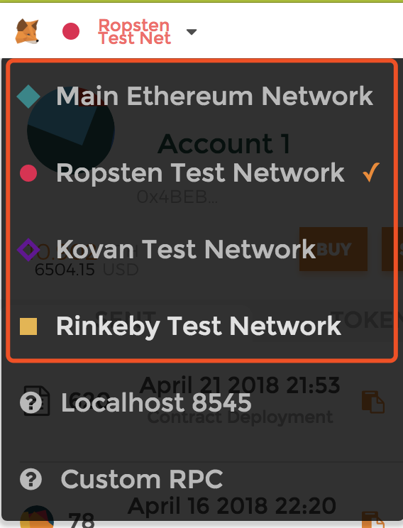 - 以太坊，最后的环境肯定是以太坊了，不过我们在上线前一定要做好测试，因为区块链具有不可篡改性，我们的DApp在上线后出bug可是无法修复的，只能通过发布一个新的DApp，然后通知你的用户以后使用新地址，所以我们在设计合约时应当设置有无效标志位，尽早地告知调用者该合约已经废弃。
DApp原理
一个DApp被调用之前需要先部署到以太坊上，不管是私链，公链还是联盟链。故本章节分为两部分，DApp部署原理和调用原理。
部署
一个DApp由多个智能合约组成，部署一个DApp也就是同时部署多个智能合约，这里讲述一下部署一个智能合约的流程，如下图所示。
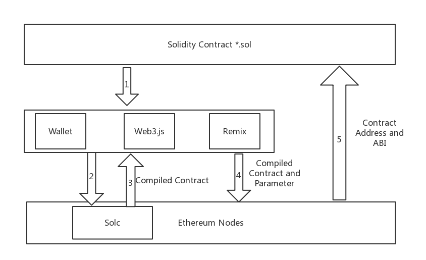
- 将编写好的Solidity智能合约通过RPC调用以太坊钱包或Web3.js等工具。
- Web3.js发送合约源码到部署在以太坊节点的Solc编译器。
- 编译器返回合约字节码。
- 发送合约字节码和初始化参数到以太坊节点。
- 以太坊节点上EVM验证完成后，部署到全网的所有节点，完成后返回合约地址和应用二进制接口(ABI)。
笔者这里推荐使用Remix进行部署，因为Remix不仅可以连接浏览器内嵌的以太坊VM，还可以和MetaMask联动，使用MetaMask当前所连的以太坊网络，而且Remix还可以调试部署好的合约，十分方便。在Remix上部署十分简单，选择部署的以太坊网络和填好合约初始化参数后，点击create按钮即可。如果我们选的是MetaMask当前的以太坊网络，则会跳转交易界面，因为部署合约本质上也是一笔交易，我们需要付交易手续费，如下图所示。
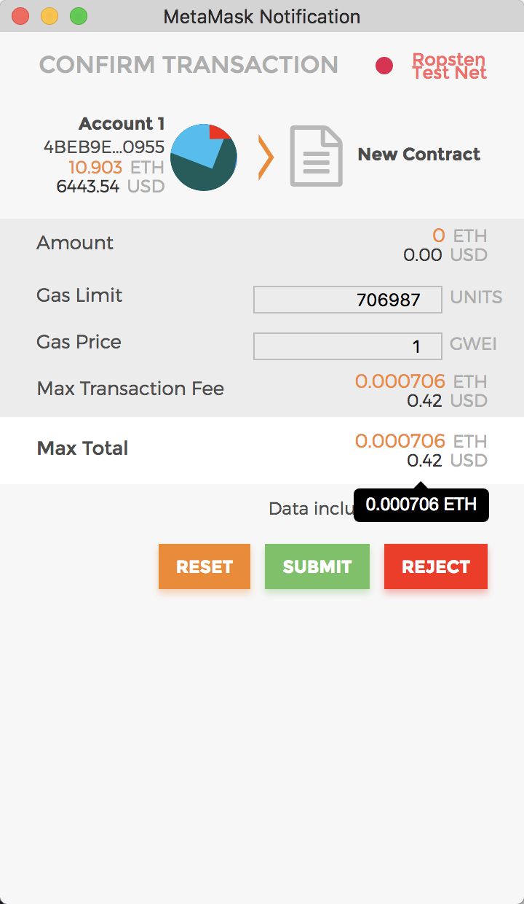
部署后的合约其实外部还不能调用，还需要我们上传源代码进行验证，不然别人不可能在不清楚源码情况下向合约发起交易，向你转账，如下所示。
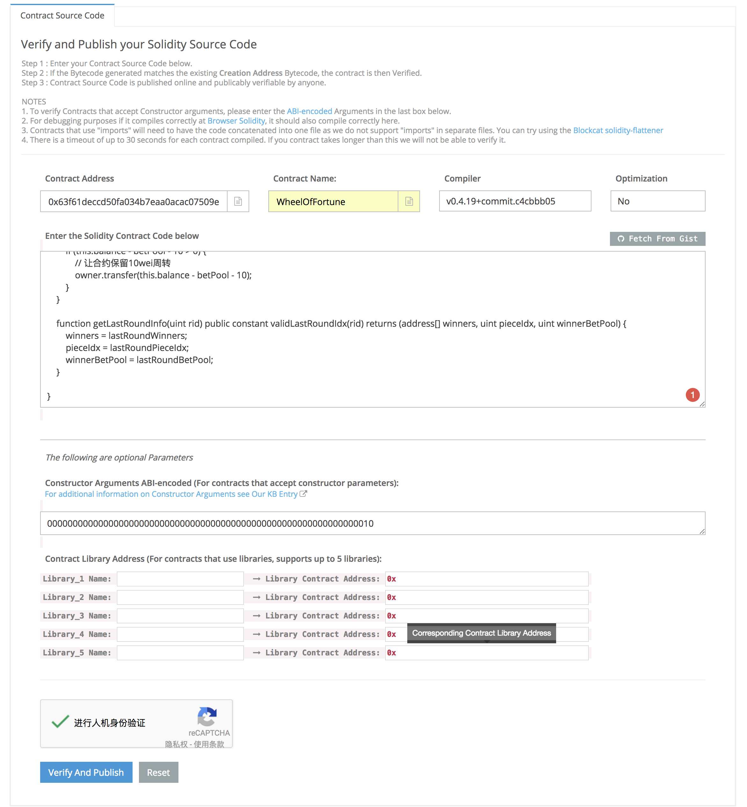
调用
部署好的合约我们就可以调用了，根据调用方式的不同，本文分为前端调用和后端调用。
前端调用相对来说简单一点，因为有MetaMask这个强大的插件，我们不必操心以太坊数据源，直接调用web3.currentProvider即可，下图展示了前端调用合约的一般流程，由于前端连接的Web3 Provider是与特定的以太坊节点相连，前端不需要管方法的签名，只需无脑调用合约中的方法即可。
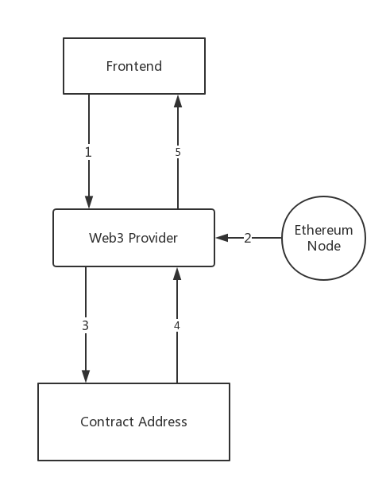
至于后台调用就麻烦一点了，由于后台没有MetaMask这么方便的工具可调用，因此要是调用公链上的智能合约，只能使用特定账户的私钥签名方法后，并且以该账户的身份调用合约，流程如下图所示。
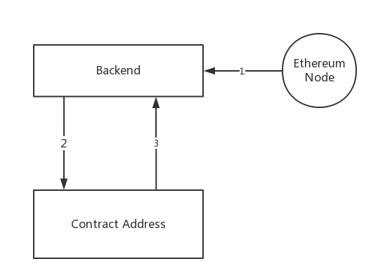
以太坊Web3.js提供调用合约的方法一共有四种：
call: 这是最简单的调用方式，适用于调用只读的方法，也就是调用过程不会修改区块链上的数据，因为它只读取本地数据即可，因此不会消耗gas，而且可以立刻获得返回值，适用于前端调用，具体例子如下。
1
2
3
4
5
6
7
8
9
10//合约声明
contract test {
function multiply(uint a) returns(uint d) {
return a * 7;
}
}
//合约调用
var Multiply7 = eth.contract(contract.info.abiDefinition);
var myMultiply7 = Multiply7.at(address);
myMultiply7.multiply.call(3)sendTransaction: 可调用读或写方法，调用过程会创建一个交易，调用之后会返回一个交易hash值，它会广播到网络，等待矿工打包, 它会消耗gas，而且该调用不能立刻获得返回值，只能从event log中获取，也是适用于前端调用，代码如下。
1
2
3
4
5
6
7
8
9
10
11
12
13
14wheelOfFortune.makeBet.sendTransaction(num - 1, betCount, tips, { from: web3.eth.accounts[0], value: betUnit * betCount + tips }).then(function (result) {
if (result.logs.length > 0) {
var eventobj = result.logs[0].args;
$.ajax({
url: '/Wheel/makeBet/' + eventobj.pieceIdx + '/' + betCount + '/' + tips + '/' + web3.eth.accounts[0],
success: function (data) {
var nextRound = JSON.parse(data);
$("#currentTotal").text(nextRound.betPool.toLocaleString());
playersNumberOfPiece = nextRound.playersNumberOfPiece;
alert('下注成功');
}
});
}
});直接调用: 这是一种特殊调用，可以说是前两种调用的结合，因为当合约方法有
constant修饰时，直接调用会等同于call，否则等同于sendTransaction。sendRawTransaction: 前两种方法都不需要调用者提供交易发起者的私钥进行方法签名，因为MetaMask或本地以太坊节点提供了，但是当我们没有MetaMask时调用公链合约，我们只能调用
sendRawTransaction使用指定账户的私钥签名方法后才能调用合约，值得注意的是，该方法我们无法获得返回值，即使在event log中也拿不到，只能在得到transaction的hash后再读取区块链信息才可以，一般在后台调用方法时用到，代码如下。1
2
3
4
5
6
7
8
9
10
11
12
13
14
15
16
17
18
19
20
21
22
23
24
25
26
27
28var winIdx = (Math.random() * wheel.config.pieceCount) >> 0;
// 后台调用infura部署的合约必须用sendRawTransaction
var coder = require('web3/lib/solidity/coder');
var CryptoJS = require('crypto-js');
var Tx = require('ethereumjs-tx');
var privateKey = new Buffer("71112e795325d5cbf14d665091ce4626f26c8342b8038f1adcdfff26be04a220", 'hex');
var functionName = 'finishRound';
var types = ['uint'];
var args = [winIdx];
var fullName = functionName + '(' + types.join() + ')';
var signature = CryptoJS.SHA3(fullName, { outputLength: 256 }).toString(CryptoJS.enc.Hex).slice(0, 8);
var dataHex = signature + coder.encodeParams(types, args);
var data = '0x' + dataHex;
var account = "0x4BEB9EA54fc912B619D5C682BA1cB3524bc80955";
var nonce = web3.toHex(web3.eth.getTransactionCount(account));
var gasPrice = web3.toHex(web3.eth.gasPrice);
var gasLimitHex = web3.toHex(3000000);
var rawTx = { 'nonce': nonce, 'gasPrice': gasPrice, 'gasLimit': gasLimitHex, 'from': account, 'to': contractAddress, 'data': data }
var tx = new Tx(rawTx)
tx.sign(privateKey)
var serializedTx = '0x' + tx.serialize().toString('hex')
web3.eth.sendRawTransaction(serializedTx, function (err, txHash) {
if (!err) {
console.log(JSON.stringify({ "transactionHash": txHash }));
} else {
console.log("finish round error " + err);
}
});
调用时需要注意的几点：
- 当调用者给予Gas不足时，EVM会报出
out of gas的错误，这时候会回滚本地交易所做过的所有修改，好在以太坊还提供了estimategas方法，可以让我们在调用之前预估交易所需的Gas，因为Solc编译器会算出每一句代码的价格，不过有时会不准确，特别是出现死循环或者违反了修饰方法的限制条件时。 - 调用频率不能过快，一方面所有调用方法都是异步的，返回时间可能会较长，另一方面有可能第一次调用的transaction还没被挖到区块中，下一次调用就来了，而且两次调用的hash可能是一样的，所以就会报
replacement transaction underpriced错误。 - 当我们调用了不存在的方法时，EVM会自动调用合约中的
Fallback方法作为兜底，而且会将Gas全耗完，如果没有定义Fallback方法，才会报错回滚。
DApp完整开发实践
在目前DApp应用市场上，目前主要有四类应用：去中心化交易所、集换类游戏、博彩类游戏和其他，比例如下图所示，其中集换式游戏以以太猫为首，这类游戏大部分以发行Token为噱头，因此本章节将讲述两种游戏类的DApp是如何开发的。
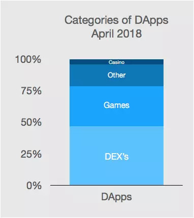
实践1. 基于以太坊发起ICO
在笔者的前一篇介绍以太坊DApp的文章里，不少同事在评论都说到ICO，虽然这在中国是违法的，但技术还是可以学习一下的。其实，在以太坊上发行代币（Token）十分简单，流程就像开发一款DApp，比自己搭建一个新的区块链平台，实现加密、共识、网络问题简单得多。
以太坊提供了很多现成的合约，类似于模板，基于这些模板我们可以快速开发一款DApp。其中ERC20是最为常用的模板之一，它规定了发行代币所需要实现的所有方法，如下图所示，我们只需编写一个智能合约继承于ERC20，实现下列方法，部署到以太坊后就完成ICO流程了，当然，你想有人买你的代币，肯定要写一个白皮书啦。
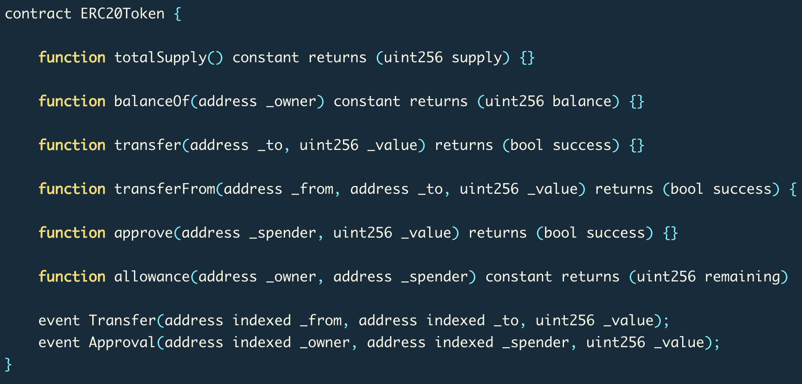
- totalSupply: 代币总发行量
- balanceOf: 某个账户的余额
- transfer: 每个合约都有一些隐藏参数，例如
from，指向当前账户，该方法返回从from账户转账_value代币到_to账户能否成功 - transferFrom: 类似于
transfer，返回从_from转账_value到_to账户能否成功，但通常是第三方调用，即调用者账户地址既不等于_from，也不等于_to - approve: 当前账户允许是否允许转账
_value代币给_spender账户 - allowance:
_owner账户最多可以转账多少代币给_spender账户，注意该方法用constant修饰，所以实现代码不允许修改区块链上的数据 - Transfer事件: 在Solidity中，事件的作用类似于日志，
Transfer事件应该在transfer和transferFrom方法中被调用 - Approval事件: 该事件应该在
approve方法中被调用
另外值得注意的是，以太猫不是基于ERC20合约，而是ERC71，这合约是在ERC20的基础上，加上了唯一性的特性，因此以太猫游戏中每只猫（Token）都是独一无二的。
实践2. 转盘大富翁
这是笔者开发的第一个比较完整的Demo，一个博彩类游戏，感兴趣的读者可以在传送门上体验，目前DApp是部署在Ropsten测试网络中，该测试网络的以太币可以免费获得，所以在上面的Demo尽情玩耍，感受以太坊交易的“快”感。想继续深入研究的读者可下载本文的附件，里面包含该Demo所有代码，运行方式就是在项目根目录执行npm start命令。
玩法
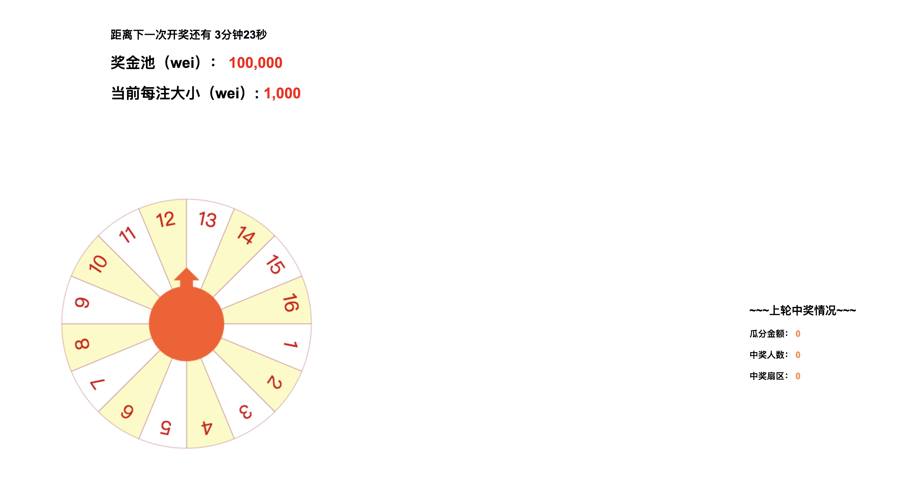
首先需要安装MetaMask插件，然后刷新页面，点击某个扇区进行下注，下注之前可以看下页面上的信息，如上图所示，顶部显示了当前的奖金池（即过往未中奖的累计奖金），还有当前每一注的大小，注意这两项的单位都是wei，这是以太坊中最小的单位，与以太币的换算关系是1Ether = 10^18wei。右边显示了上轮的中奖情况，玩家可以通过统计每一轮开奖的扇区来计算开奖的规律（笑）。点击扇区下注时页面会弹出一个输入框输入下的注数，确定后将跳出MetaMask交易界面，如下图所示，由于我们每一注比较小，所以玩家可以下多一点注，不然交易的amount近似于0。当我们点击submit按钮后，交易就发生了，由于区块链同步时间较长，我们每次下注大约需要等几十秒左右才能确认下注成功，最后我们等待倒计时结束后系统将开奖。
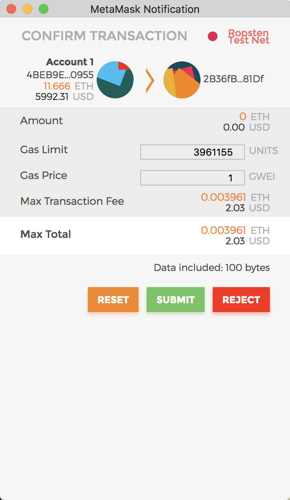
架构
整个Demo的架构如下：
- 前端：JavaScript + MetaMask + Web3.js
- 后台：Node.js + Web3.js
- 区块链：Ropsten以太坊测试网络
三者的通信过程如下图所示：
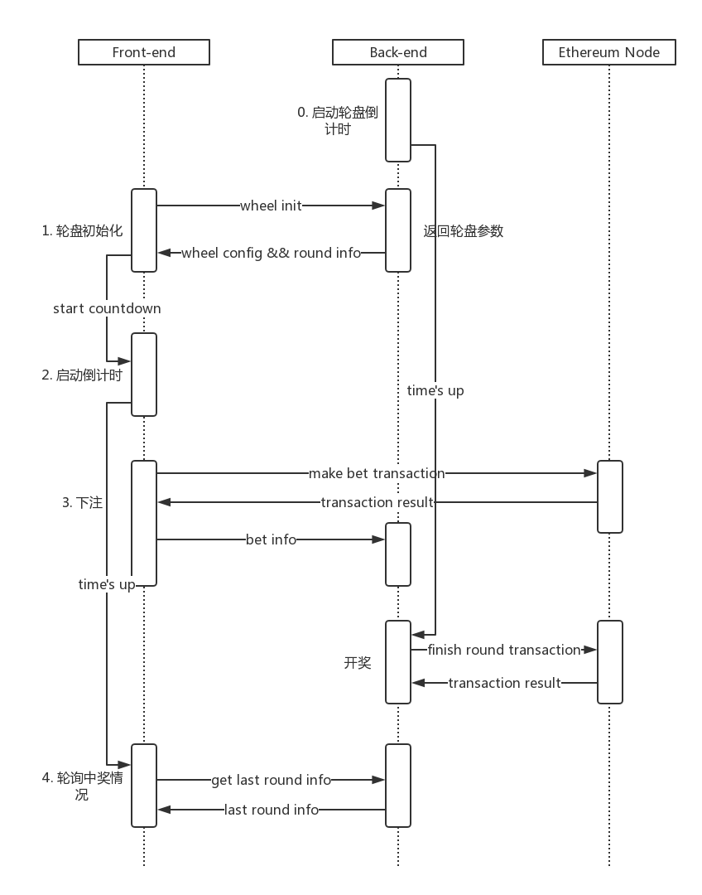
0.后台启动轮盘倒计时
1.浏览器访问前端页面，向后台获取转盘的配置
2.前端页面启动倒计时
3.用户在前端页面下注，先请求以太坊节点，得到下注成功的返回再通知后台
3.5.后台倒计时时间到，请求以太坊节点，返回当前回合是否成功结束
4.前端倒计时也时间到了，向后台请求当前回合的开奖情况，但由于后台开奖结果需要等待以太坊节点的返回，因此这里需要轮询，要么就改成后台主动push到前端
注意，这里第3步前端下注的时候由于回调时间过长，可能会导致在后台开奖后还没有下注成功，这种情况下DApp应该要回滚这次下注，但这只是个Demo，就不要在意这些细节了。
DApp VS 传统App
讲到这里，相信读者已经清楚以太坊DApp的完整开发流程了，回顾一下这个流程，对于DApp开发和传统App开发的区别，读者总结出以下几点：
- 前端、后台与数据源解耦，在传统App开发过程中，数据源对于前端来说都是不可见的，只有后台才可以增删改查数据源
- 调用方式，传统App访问数据源大部分都是靠数据库提供的接口或第三方封装的接口，如JDBC，而DApp中一切访问数据源目前都通过Web3.js，而且还需要考虑手续费和签名问题
- 调用频率，上面已经提到，以太坊节点访问速度极慢而且还需要手续费，如果不是必要的访问，尽量放到业务服务器，如上面Demo获取转盘的配置的请求就是请求业务后台而不是以太坊节点
- 不存在不确定代码，也就是DApp所有合约的代码都是客观的，所有节点执行，执行多少次都是一样的结果，例如转盘大富翁Demo中，中奖的扇区号码是业务后台随机产生的，而不是合约代码，为什么呢，最直接原因是Solidity不提供这样的方法，而最根本的原因是DApp是分布式执行的，如果每个节点都产生一个随机数，就会导致合约执行的最终结果不一致，也就破坏了账本。除此之外，获取一些主观结果也是不行的，例如获取今天是否下大雨的结果，这个“大”智能合约根本无法定义。
总结&思考
目前DApp的开发力度和普及程度还远远不够，在手机App面前如同九牛一毛，即使是去年最火爆的以太猫，平均日活也只有900多，原因笔者认为还是在于门槛太高（需要安装插件，每笔交易时间长，手续费高），希望号称下一代区块链平台的EOS能解决这些根本性问题。
本文对于以太坊DApp开发的介绍到此为止了，想继续深入研究的读者可参考下列链接：
- 以太坊官方文档
- Solidity官方文档
- 以太坊爱好者
- Truffle：DApp打包工具
- MetaMask：以太坊电子钱包chrome插件，向前端页面提供数据源
最后的最后，笔者想抛一个问题，智能合约是否真的智能，真的公平呢？
笔者认为至少目前还没达到这个水平，原因刚才已经提到，合约结果的来源，也就是面对需要主观性的仲裁结果的时候，智能合约就无能为力了，这就大大限制了智能合约的使用范围，如果这个结果来自于业务后台（例如刚刚转盘的结果），那就很容易出现暗箱操作，毕竟业务后台的代码一般不会开源。针对这种状态，今年年初以太坊创始人提出了预言机的概念，一个可提供可信任、可验证结果的来源，相当于现实世界中的仲裁法庭，当合约发生冲突时能给出一个人人信服的结果，但这样区块链难以攻破的现状就不复存在了，预言机将成为区块链的短板，希望未来这一问题能够尽快解决，不然DApp实在难以普及。